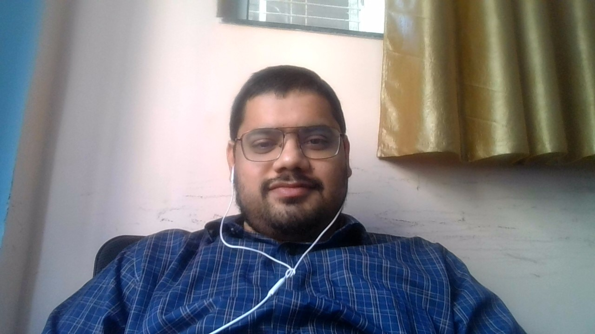

my contact
SUMMARY
An intermediate certified mendix developer, worked on 4 full stack mendix project
for client : dsm-firmenich. Having 3 years of tech experience out of which 2.5 years in mendix.
Currently looking for a bigger organization that can offer better renumeration and career growth.
EDUCATION
(B.E. + M.Sc.) (BITS Pilani)
WORK EXPERIENCE
OmnePresent Technologies, Baner - Pune
Engineer
Dec/2021 - present
- Learnt Mendix
- worked on 4 full stack mendix projects with clients - Indium software,chennai and dsm-firmenich, Netherlands
- worked on UI/UX, designed pages, domain modelling, configured security,implemented business logic using microlows and workflows, integrated with external systems using REST, generated documents using
document template, requirement gathering from client, performed UAT.
SKILLS